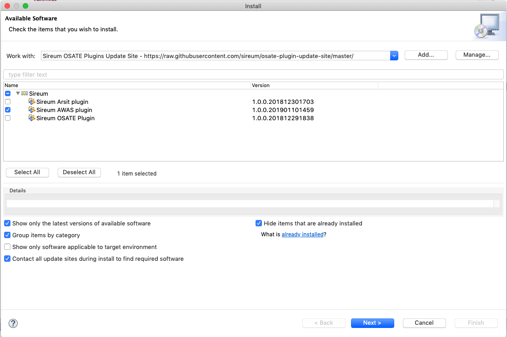
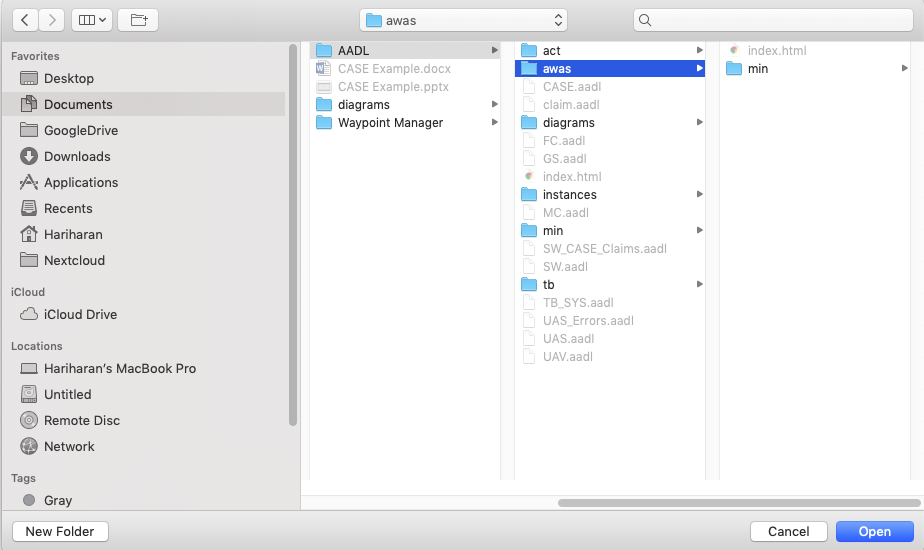

Sireum Awas Documentation
1. Getting Started
1. Getting Started¶
Sireum Awas is supported in x64 macOS, Linux, and Windows operating systems, and in Google Chrome and Mozilla Firefox browsers.
There three ways one can obtain Awas:
1.1. Sireum Awas pluging for OSATE¶
OSATE is a customized Eclipse IDE for developing AADL models. Awas can be installed as a plugin in OSATE.
Open OSATE, and navigate to Help > Install New Software …
Click Add… and in the Location: field paste the following URL
https://raw.githubusercontent.com/sireum/osate-plugin-update-site/master/
Expand the
Sireumoption and selectSireum Awas pluginto install, and then clickNextAccept the license agreement and click
FinishRestart OSATE when prompted
Skip to Running Awas section to generate an Awas visualizer for your AADL Model
1.2. Sireum Awas JAR¶
Sireum Awas can be included in your OSATE plugin using the published
JAR. Use the following Maven resolver and dependency to include
Awas in your project.
Add the JitPack repository to your build file
<repositories> <repository> <id>jitpack.io</id> <url>https://jitpack.io</url> </repository> </repositories>
Add the dependency
<dependency> <groupId>com.github.sireum</groupId> <artifactId>v3-awas</artifactId> <version>-SNAPSHOT</version> </dependency>
1.3. Sireum Awas source distribution¶
Awas is part of a high-assurance software development platform called Sireum. Sireum IVE is used to develop the Awas source code and an OSATE development environment is used to develop the Sireum Awas OSATE plugin.
1.3.1. Prerequisites¶
Install the required tools for building Sireum: bash, git, unzip, wget, bc
Follow the instructions in the Sireum webpage apropriate for your platform to install the
Sireum IVE for developmentFollow the OSATE instructions to setup an OSATE development environment. Eclipse is the underlying IDE being used by OSATE so the rest of plugin development instructions will refer to the IDE as
Eclipse
1.3.2. Installing and Running Awas¶
There two steps in building Sireum Awas from source
1.3.2.1. Building Sireum Awas Jar¶
Clone the following repositories
Using HTTPS:
git clone --recursive https://github.com/sireum/v3.git sireum-v3 git clone https://github.com:sireum/air.git sireum-v3/aadl/ir
Using SSH:
git clone --recursive git@github.com:sireum/v3.git sireum-v3 git clone git@github.com:sireum/air.git sireum-v3/aadl/ir
From the parent directory of
sireum-v3from the previous step, clone the awas repositoryUsing HTTPS:
git clone https://github.com/sireum/v3-awas.git sireum-v3/awas
Using SSH:
git clone git@github.com:sireum/v3-awas.git sireum-v3/awas
Follow the Setting up Sireum IVE documentation to setup the Sireum development environment
Note
Enable the
Use sbt shell for build and importoption
Sireum Awas is built using Scala and Slang with Java facades. Howevere, the Awas visulaizer is based on HTML5 and Javascript. This is accomplished by cross compiling Scala to Javascript using ScalaJs
Building the Sireum Awas Jar
Without Scala:
Execute the following shell script in your terminal
./sireum-v3/awas/buildAwasJar.sh
Awas Jar can be found under
awasJar/target/scala-2.12/With Scala:
Execute the following shell script in your terminal
./sireum-v3/awas/buildSireumJar.sh
Rename the generated sireum.jar to awas.jar
1.3.2.2. Building Sireum Awas plugin¶
Open the Eclipse and install the Scala IDE for Eclipse plugin
Clone the following repository
git clone git@github.com:sireum/osate-plugin.git osate-plugin
In Eclipse go to
File -> Import...Expand the
Generalfolder and selectExisting Project into Workspace, then clickNextEnter the path to the directory where you cloned the repository and then select all the available projects from the project listings and click
FinishSwitch to the plug-in development perspective:
Window -> Perspective -> Open Perspective -> Other... -> Plug-in DevelopmentCopy the jar built in the Building Sireum Awas Jar step into the
<ostate-plugin-dir>/org.sireum.aadl.osate.awas/lib/directoryRun the OSATE eclipse instance by clinking the
Runbutton from theToolbarusing theOSATE2run configuration
1.3.2.3. Running Awas¶
Open an AADL model in OSATE and build an instance model (follow these instructions to create an instance model)
Select a system implementation from the
Outline viewand selectOSATE > Sireum Bridge > Generate Awas Visulaizerfrom the menu barIn the popup, select a directory to save the generated Awas visualizer.